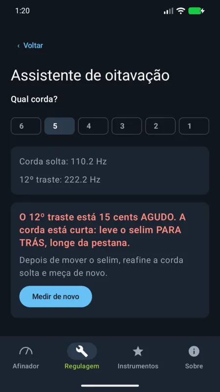

1 · Afine
Um afinador que escuta
Nove afinações, referência de A4 ajustável, detecção automática da corda e uma nota para tocar e afinar de ouvido.
Um afinador e guias de regulagem passo a passo para violão e guitarra. Disponível em português e inglês, em retrato e em paisagem.



Nove afinações, referência de A4 ajustável, detecção automática da corda e uma nota para tocar e afinar de ouvido.
Cordas, curvatura do braço, altura das cordas, pestana, oitavação e altura dos captadores, com valores típicos, ferramentas e avisos de segurança.
Toque a corda solta e depois o 12º traste. O StringSlate diz quantos cents você está fora e para que lado mover o selim.
O StringSlate não exige conta. O microfone só é usado enquanto o afinador está na tela; o som é analisado no seu celular e nunca é gravado nem enviado. Os valores de regulagem são referências típicas; siga as especificações do fabricante e leve o instrumento a um técnico se tiver dúvida.
Suporte: gameslate@proton.me
Encontre seu próximo grande jogo.
Descubra jogos de PC com atividade de jogadores, avaliações e contexto de compatibilidade com Linux, tudo em um só lugar.
Leu 15? Receba 3 ótimos.
Diga até 15 livros que você leu e receba 3 sugestões do que ler em seguida. Em português e inglês.
Uma banda ao vivo no seu bolso.
Uma banda de acompanhamento que toca blues, pop, rock, valsa e jazz no tom e andamento que você escolher, com cifras, escalas e posições de acorde. Em português e inglês.
Escreva. Toque. Grave.
Um caderno de compositor com banda: digite acordes e letra, ouça tocando, grave sua voz ou violão por cima e compartilhe o resultado. Em português e inglês.